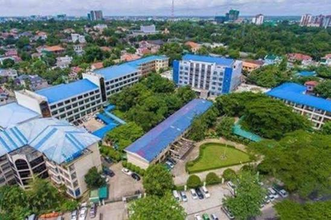

About University of Foreign Languages
ရန်ကုန်နိုင်ငံခြားဘာသာသင်တက္ကသိုလ် (Yangon University of Foreign Languages - YUFL) သည်
ရန်ကုန်မြို့၏ ပညာရေးနှင့် လူစည်ကားရာ နေရာတစ်ခုဖြစ်သော ကမာရွတ်မြို့နယ်၊
တက္ကသိုလ်နယ်မြေတွင် တည်ရှိပါသည်။
အင်းစိန်လမ်းမကြီးနှင့် တက္ကသိုလ်နယ်မြေလမ်းဆုံအနီးတွင် တည်ရှိပြီး ရန်ကုန်တက္ကသိုလ်၊
ပညာရေးတက္ကသိုလ်နှင့် အခြားသော အထင်ကရ ပညာရေးဌာနများနှင့် မလှမ်းမကမ်းတွင်
တည်ရှိနေခြင်းကြောင့် ကျောင်းသားကျောင်းသူများအတွက် သွားလာရေး အလွန်အဆင်ပြေသော
ပတ်ဝန်းကျင်တစ်ခုပင် ဖြစ်ပါသည်။
၁၉၆၄ ခုနှစ်တွင် နိုင်ငံတော်၏ လိုအပ်ချက်အရ နိုင်ငံခြားဘာသာစကားများကို စနစ်တကျ
သင်ကြားပေးနိုင်ရန်နှင့် နိုင်ငံတကာနှင့် ဆက်ဆံရေး၊ သံတမန်ရေးရာနှင့် ကုန်သွယ်ရေးတို့တွင်
အထောက်အကူပြုမည့် ကျွမ်းကျင်ပညာရှင်များ မွေးထုတ်ပေးရန် ရည်ရွယ်ချက်ဖြင့်
"ရန်ကုန်နိုင်ငံခြားဘာသာသိပ္ပံ" (Institute of Foreign Languages - IFL) အဖြစ်
စတင်တည်ထောင်ခဲ့သည်။ ထိုကာလက ရန်ကုန်တက္ကသိုလ်၏ လက်အောက်ခံ အသိအမှတ်ပြု
သိပ္ပံကျောင်းတစ်ကျောင်းအနေဖြင့် စတင်ရပ်တည်ခဲ့ပြီး အင်္ဂလိပ်စာအပါအဝင် အဓိကကျသော
နိုင်ငံခြားဘာသာစကားများကို စတင်သင်ကြားပေးခဲ့သည်။
အချိန်ကာလများ ရွေ့လျားလာသည်နှင့်အမျှ နိုင်ငံတကာနှင့် ပူးပေါင်းဆောင်ရွက်မှုများ
ကျယ်ပြန့်လာခြင်း၊ ကမ္ဘာ့နိုင်ငံများနှင့် ရင်ဘောင်တန်းနိုင်ရန် နိုင်ငံခြားဘာသာစကား
လိုအပ်ချက်များ မြင့်မားလာခြင်းတို့ကြောင့် သင်ကြားရေးကဏ္ဍများကို တိုးချဲ့ခဲ့ရသည်။
ဘာသာစကား သဒ္ဒါနှင့် စာပေသင်ကြားမှုကိုသာမက လက်တွေ့ပြောဆိုအသုံးပြုနိုင်မှု၊
ဘာသာပြန်ဆိုမှုနှင့် ယဉ်ကျေးမှုဆိုင်ရာများကိုပါ ပိုမိုကျယ်ပြန့်စွာ သင်ကြားပေးနိုင်ရန်
လိုအပ်လာခဲ့သည်။
ထိုသို့ တိုးတက်လာသော သင်ကြားရေး အခန်းကဏ္ဍများနှင့် အဆင့်အတန်းတို့နှင့်အညီ ၁၉၉၀
ပြည့်လွန်နှစ်များတွင် ယခင် ရန်ကုန်နိုင်ငံခြားဘာသာသိပ္ပံ (IFL) ကို
"ရန်ကုန်နိုင်ငံခြားဘာသာတက္ကသိုလ်" (Yangon University of Foreign Languages - YUFL)
အဖြစ်သို့ အဆင့်မြှင့်တင် ဖွဲ့စည်းခဲ့သည်။ တက္ကသိုလ်အဖြစ်သို့
ပြောင်းလဲဖွဲ့စည်းလိုက်ခြင်းနှင့်အတူ ဘာသာစကား Major အသစ်များကို
တိုးချဲ့ဖွင့်လှစ်နိုင်ခဲ့ပြီး ဒီပလိုမာသင်တန်းများ၊ မဟာဘွဲ့နှင့်
ပါရဂူဘွဲ့သင်တန်းများအထိပါ တိုးချဲ့ဆောင်ရွက်လာနိုင်ခဲ့သည်။
ယနေ့အချိန်တွင် ရန်ကုန်နိုင်ငံခြားဘာသာတက္ကသိုလ်သည် မြန်မာနိုင်ငံ၏ တစ်ခုတည်းသော
နိုင်ငံခြားဘာသာ အဓိကသင်ကြားသည့် ထိပ်တန်းတက္ကသိုလ်ကြီးတစ်ခုအဖြစ် ရပ်တည်လျက်ရှိပြီး၊
နိုင်ငံတကာ ဆက်ဆံရေးနယ်ပယ်အသီးသီးအတွက် မရှိမဖြစ်လိုအပ်သော
ဘာသာစကားကျွမ်းကျင်ပညာရှင်များကို ဆက်လက် မွေးထုတ်ပေးနေဆဲဖြစ်သော တက္ကသိုလ်တစ်ခု ဖြစ်ပါသည်။
Degree Programs
YUFLတွင် (နိုင်ငံခြားသားများကို အတွက်သင်ပေးသော မြန်မာဘာသာကိုဖယ်ထားပါက) စုစုပေါင်းမေဂျာ၈ခုရှိပါသည်။ (စပိန်နှင့် အီတာလျံဘာသာတွေကိုလည်းတိုးချဲ့ဖွင့်လှစ်ဖိုစီစဉ်နေတယ်လိုလည်းသိရပါတယ်။)
- တရုတ်ဘာသာ
- အင်္ဂလိပ်ဘာသာ
- ပြင်သစ်ဘာသာ
- ဂျာမန်ဘာသာ
- ဂျပန်ဘာသာ
- ကိုရီးယားဘာသာ
- ရုရှားဘာသာ
- ထိုင်းဘာသာ
လက်ရှိ YUFLတွင် သင်ကြားပြသပေးနေသည့် အခြားသော ပညာရေးပရိုဂရမ်များမှာ
- ပညာရေးဘွဲ့သင်တန်းများ
- နေ့သင်တန်း(B.A./B.A.(Hons.)) - ၄နှစ်သင်တန်း
- ဒီပလိုမာနှင့် certificate လက်မှတ်ရသင်တန်းများ
- အထူးဘာသာစကား ဒီပလိုမာသင်တန်းများ (Diploma in Language)
- အခြေခံနှင့် အဆင့်မြင့် ဘာသာစကားသင်တန်းများ
- ဘွဲ့လွန်သင်တန်းများ:
- မဟာဘွဲ့ (M.A.) နှင့်
- ပါရဂူဘွဲ့ (Ph.D.) သင်တန်းများ
Club & Activities
YUFLမှာအားကစား၊အနုပညာနဲ့ပညာရပ်ဆိုင်ရာ clubsတွေလည်းရှိပါတယ်။ပွဲလမ်းသဘင်တွေ လည်းများပြီးတော့ပျော်စရာကောင်းပါတယ်။
YUFLမှာကFarewellကို4ခုလောက်
လုပ်ပေးပါတယ်။ ပါချုပ်ကလုပ်ပေးသော farewell၊ Student Unionကလုပ်ပေးသော farewell၊ Majorကလုပ်ပေးသောfarewell နှင့်
Familyကလုပ်ပေးသော farewell ဟူ၍ ရှိပါတယ်။ Finalကျောင်းသားများကတော့ နောက်ဆုံးsemesterမှာ Cultural Showကို
majorအလိုက်ကရပါတယ်။ ကပွဲတွေမှာ နိုင်ငံပေါင်းစုံအင်္ကျီတွေ၊ ဓလေ့တွေ၊
သီချင်းတွေနဲ့ကရပါတယ်။ ကျောင်းနှစ်ပတ်လည်ပွဲမှာဈေးရောင်းပွဲတွေ၊ Stage showတွေလုပ်ပါတယ်။
ဈေးရောင်းပွဲမှာဆိုရင်နိုင်ငံပေါင်းစုံအလိုက်
ရိုးရာမုန့်တွေရောင်းပါတယ်။ YUFLကပျော်ပွဲရွှင်ပွဲများသလို စာလည်းများတဲ့အတွက်
Time Management ရှိဖို့ လိုပါတယ်။
Opportunities
ကျောင်းမှာWIFIဆိုရင်လည်း အခန်းတိုင်းတပ်ပေးထားတော့ internetသုံးရတာမှာ အဆင်မပြေမှု မရှိသလောက်ပါပဲ။
Libraryဆိုရင်လည်း Korean majorအတွက်သီးသန့်libraryထပ်ပေးထား ပါတယ်။ တခြားmajorတွေကတော့
ပုံမှန်libraryပဲသုံးကြပါတယ်။
YUFLကျောင်းဆင်းတစ်ယောက်အနေနဲ့ကျောင်းပြီးတာနဲ့ အလုပ်တန်းဝင်နိုင်လောက်တဲ့အထိကို
အခွင့်အရေးများပါတယ်။
အခုဆိုရင်နိုင်ငံတကာက ရင်းနှီးမြှုပ်နှံမှု တွေလည်းဝင်ရောက်လာတဲ့အပြင်
ဘာသာစကားသင်ယူတတ်မြောက်ချင်သူများပြားလာတဲ့အတွက်ကြောင့်ကျောင်းမှာညနေပိုင်း
CHRDလိုခေါ်တဲ့weekdays, weekends evening classတွေကို
ဖွင့်ပေးထားပါတယ်။ကိုယ်နှစ်သက်ရာဘာသာရပ်ကို ရွေးချယ်တက်ရောက်နိုင်ပါ တယ်။ကျောင်းမှာ
မြန်မာစာလာသင်တဲ့foreignersတွေ ရှိပါတယ်။ (China, Vietnam, Thailand,Korea,
Laosဘက်ကလူတွေများပါတယ်။)
Information Availability Notice
Some information on this website may not yet be available or may still be under
collection and verification. As a result, certain sections may be incomplete or
temporarily unavailable.
We are continuously working to update and improve the content to ensure that accurate
and comprehensive information is provided. Thank you for your patience and
understanding.
Nothing
Nothing
Qualification
ရန်ကုန်နိုင်ငံခြားဘာသာတက္ကသိုလ် (YUFL) တွင် Grade 12 (တက္ကသိုလ်ဝင်စာမေးပွဲ) အောင်မြင်ထားသော ကျောင်းသား/သူများ ပထမနှစ် အချိန်ပြည့်ဘွဲ့သင်တန်း (နံနက်ပိုင်း) တက်ရောက်ရန် လိုအပ်သော အမှတ်နှင့် အချက်အလက်များမှာ အောက်ပါအတိုင်း ဖြစ်ပါသည်-
- ၁။ ဝင်ခွင့်သတ်မှတ်အမှတ် (Cut-off Marks)
- ဘာသာရပ်အလိုက် ကွဲပြားခြင်း: ပုံသေအမှတ်မရှိဘဲ နှစ်စဉ် လျှောက်ထားသူဦးရေနှင့် ရမှတ်များအပေါ် မူတည်၍ ဝင်ခွင့်အမှတ် (Cut-off Point) ပြောင်းလဲပါသည်။
- အင်္ဂလိပ်စာမေဂျာ: ပုံမှန်အားဖြင့် အမှတ်အမြင့်ဆုံးဖြစ်ပြီး အနည်းဆုံး ၄၈၀ မှ ၅၀၀ အထက် ရှိရန် လိုအပ်လေ့ရှိသည်။
- အခြားနိုင်ငံခြားဘာသာစကားများ (ဂျပန်၊ ကိုရီးယား၊ တရုတ်၊ ပြင်သစ်၊ ဂျာမန်၊ ရုရှား၊ ထိုင်း): မိမိရမှတ် အနည်း/အများအလိုက် ရွေးချယ်နိုင်ပြီး ၄၀၀ အထက်/၄၃၀ အထက် ဝန်းကျင်ဖြင့် ဝင်ခွင့်ရရှိနိုင်လေ့ရှိပါသည်။
- အင်္ဂလိပ်စာရမှတ် သတ်မှတ်ချက်: မည်သည့်ဘာသာရပ်ကို လျှောက်ထားသည်ဖြစ်စေ တက္ကသိုလ်ဝင်စာမေးပွဲ အင်္ဂလိပ်စာဘာသာရပ်တွင် အမှတ်ကောင်းကောင်း (ဥပမာ- ဂုဏ်ထူး သို့မဟုတ် အနည်းဆုံး ၆၅ မှတ်အထက်) ရရှိထားရန် လိုအပ်ပါသည်။
Information Availability Notice
Some information on this website may not yet be available or may still be under
collection and verification. As a result, certain sections may be incomplete or
temporarily unavailable.
We are continuously working to update and improve the content to ensure that accurate
and comprehensive information is provided. Thank you for your patience and
understanding.
ဘယ်လိုလူတွေ တက်ရောက်သင့်သလဲ
YUFLကိုလျှောက်ထားနိုင်ဖိုအတွက်ဆိုရင်တက္ကသိုလ်ဝင်စာမေးပွဲမှာရမှတ်၄၀၀နဲ့အထက်ရရှိဖိုလိုပါတယ်။အင်္ဂလိပ်မေဂျာအတွက်ဆိုရင်ဘာသာစုံရမှတ် ၄၀၀နဲ့အထက်အပြင်အင်္ဂလိပ်စာရမှတ်၆၅မှတ်နဲ့အထက်ရှိဖိုလိုပါသေးတယ်။လူတွေ့နူတ်ဖြေစာမေးပွဲကိုလည်းဖြေဆိုရပါတယ်။
တက္ကသိုလ်အကြောင်း ပိုမိုသိရှိလိုပါက: